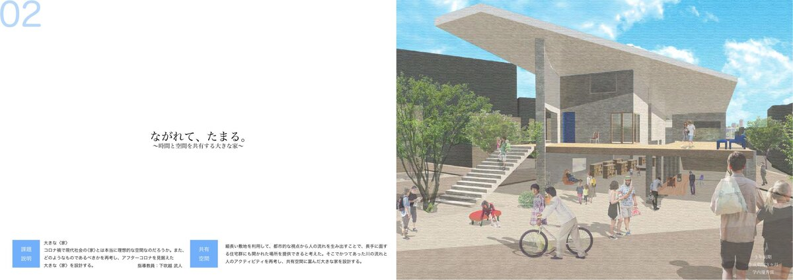
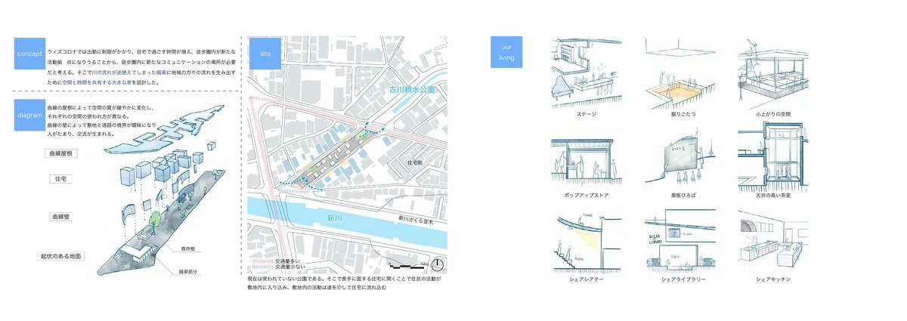
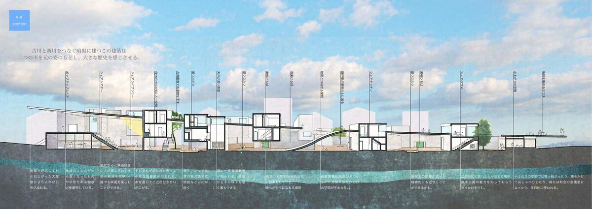
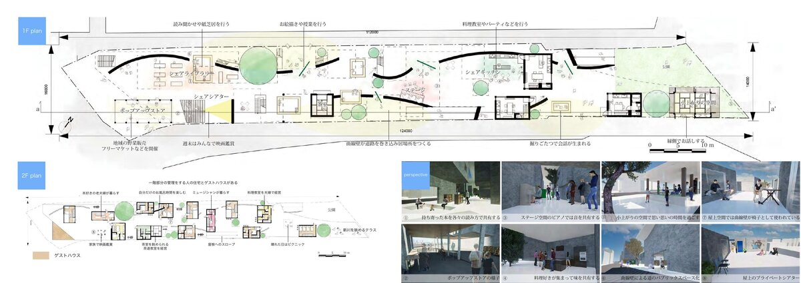

During the COVID-19 pandemic, time spent at home increased dramatically — and with it, a renewed question: what should a house truly be? This project takes that question seriously, proposing a large collective house that replaces the isolation of individual units with shared time and shared space.
コロナ禍によって自宅で過ごす時間が急増したことで、「家とは本当にどうあるべきか」という問いが切実になった。本設計はその問いに応え、個の閉じた住戸ではなく、時間と空間を共有する大きな家を提案する。
The site sits along a culverted river in Edogawa-ku — an unused strip of public land whose buried waterway still shapes the ground. The proposal revives this latent flow as a social organizer: curved rooflines and undulating ground guide movement through the long, narrow site, drawing pedestrians in from the street and residents out from their private rooms.
敷地は江戸川区の暗渠沿いの細長い未利用地。かつての川の流れを空間の軸として読み替え、曲線の屋根と起伏のある地面が人の動きをやわらかく誘導する。道路側からは住民でない人々も自然と引き込まれ、住民の生活と地域の活動が緩やかに交わる。
The ground floor opens to the neighbourhood with a pop-up store, shared kitchen, share library, and stage. Private residences — including a guest house — occupy the upper level, where curved walls create subtle territorial shifts between unit types. The section extends underground to connect visually with the ghost of the buried river below.
1階はポップアップストア・シェアキッチン・シェアライブラリー・ステージを配し、地域に開く。2階には住戸・ゲストハウスを置き、曲線壁が住戸タイプごとに緩やかな領域を形成する。断面は地下まで伸び、暗渠の記憶と視覚的につながる。
Exterior perspective外観パース


